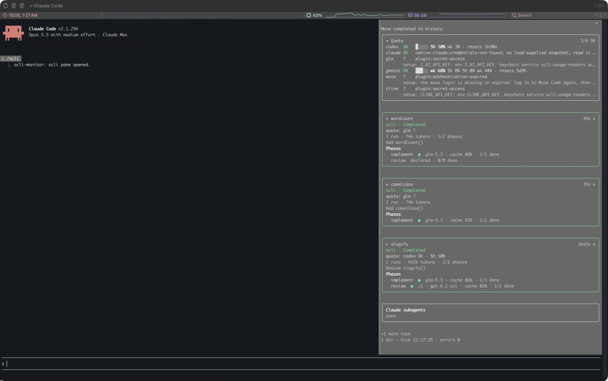
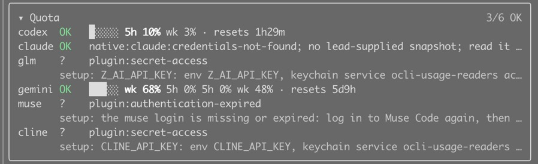
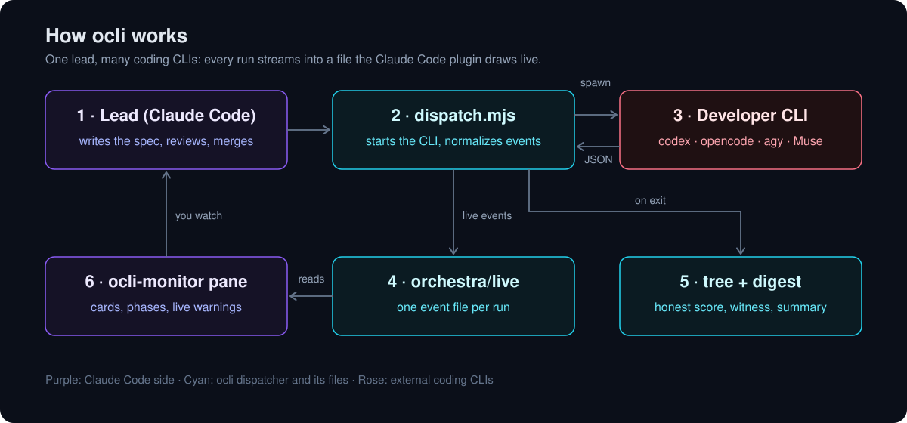

ocli — Orchestrated CLI
ocli is a free, open-source orchestrator for Claude Code that runs headless coding CLIs under one lead, routes work by plan quota and shows every run live as Workflow-style cards.
When Claude Code
orchestrates Codex, opencode, Antigravity agy or Muse as background developers, each
one runs out of sight. ocli is a dispatcher that runs one CLI per call and turns its
native JSON event stream into one normalized live-event file per run, and a Claude Code
plugin that draws those runs as Workflow-style cards with phases, live.
The card


╭──────────────────────────────────────────────────────────╮
│ ▸ fix-parser 4m12s │
│ ocli · Running │
│ 4 runs · 131k tokens │
│ Fix the tokenizer edge cases │
│ Phases │
│ implement ●●● glm-5.3, gpt-6-astra · 2/3 done │
│ ▁▁▂▃▁▅▇█▃▂ ↳ tool.end bash: npm test │
│ review ● muse-spark-1.3-contributor · 1/1 done │
╰──────────────────────────────────────────────────────────╯One card per task, newest activity first. One dot per run (running, completed, blocked or stale,
failed). A running run keeps one line: its sparkline and last action. Press the card's head to open it in place: one block per run says what it was asked, where
it works, what it is doing and how it ended. Finished cards get an × that moves them to a
History card at the bottom, by hand only. Ended runs raise one toast each.
Quota card. The first card shows every developer's plan limits: one row per
provider (codex, claude, glm, gemini, muse, cline) with 5h NN% and wk NN% (the
window the gate binds on in bold), the reset time and an OK / STOP /
? chip; a STOP row says until HH:MM. Gemini gets
argon and flash sub-rows, readings older than 30 minutes are dimmed, and an
unavailable provider shows a setup line. Each task card carries one quota:
line. The pane only reads <live dir>/usage/latest.json, which the dispatcher writes
after every live reading, scrubbed of identity, secrets and home paths; it never runs a reader.
Requirements
- Claude Code ≥ 2.1.292 (mods need ≥ 2.1.287 in the terminal, ≥ 2.1.286 in the Desktop app).
- Node.js ≥ 22.13, for the dispatcher and
/ocli-digest. No runtime dependencies. - The developer CLIs you route to, installed and logged in with their own login.
Quick start
1. Install the plugin from a local clone:
git clone <this repository> ocli
claude plugin marketplace add "$PWD/ocli"
claude plugin install ocli-monitor@ocliOnce published: claude plugin install ocli-monitor --marketplace nsozturk/ocli.
2. Make the dispatcher policy yours (Node.js 22.13+, no dependencies):
cp ocli/dispatcher/policy.example.json ocli/dispatcher/policy.json # starter: codex + opencode
cp ocli/dispatcher/policy.full-roster.json ocli/dispatcher/policy.json # or every route ocli knowsThe routes pin the models they were verified with. Set each route's model to
one your CLI lists, read Permissions and sandboxing, and dispatch each
route once by hand before you trust it.
3. Keep the run files out of git: they hold full prompts and raw transcripts. Add to the
project's .gitignore:
orchestra/
.orchestra-last.md4. Dispatch from your project root, then open the pane with /ocli:
node /path/to/ocli/dispatcher/dispatch.mjs \
--role implement --task fix-parser \
--phase implement --title "Fix the tokenizer edge cases" \
--prompt "$(cat brief.md)" --verify "npm test"Dispatcher flags
| flag | meaning |
|---|---|
--role | a policy route: implement (opencode), reason (codex), breadth (agy), muse |
--task | groups runs into one card; [A-Za-z0-9][A-Za-z0-9._-]* |
--prompt | the brief, passed as one argv element, never through a shell |
--phase | the card phase (default: the role) |
--title | what the run is for (default: the prompt's first line) |
--root | the workspace the CLI works in (default: cwd) |
--verify | a command run afterwards; its exit code becomes score 1/0 |
--suffix | per-run text appended last, keeping the prompt prefix cache-stable |
--parent | the record id of the run this one continues |
--declare-phases | with --task only: write the task's plan (plan.json) so the card shows every phase before it runs; spawns nothing |
Exit codes: 0 recorded, 1 verifier failed, 2 refused, CLI
not startable, or errored. A run that left the work tree unchanged (contents and HEAD) is
unscored (score: null) even when the verifier passes, whatever its exit code.
The CLI's closing claims are checked against its own trace (witness.mjs); unbacked ones
show as ⚠ unwitnessed on the run. /ocli-digest (or
node dispatcher/digest.mjs) summarizes the last 12 hours per task and phase. Live files go to <cwd>/orchestra/live; ORCHESTRA_LIVE_DIR
moves them (then set the plugin's liveDirs to the same absolute dir).
Configuration
ocli never asks for a credential; its built-in usage readers read the sessions your own CLIs
already keep, locally (see SECURITY.md). One optional environment variable,
also listed in .env.example:
export ORCHESTRA_LIVE_DIR=/absolute/path/to/orchestra/live # default: <cwd>/orchestra/liveThe plugin option liveDirs (comma-separated absolute paths) sets which dirs the pane
watches. Usage counters are optional: codex limits are read by spawning codex app-server
with codex's own login, every other provider through ocli's built-in usage readers (ported from
CodexBar, cookie readers on macOS only; a pool without a reading runs until its provider stops it); Claude's come from a
snapshot the lead passes in. A capped codex route with an
unknown reading is never dispatched on an assumption. Caps come from the provider plans
(ORCHESTRA_PLANS, else ~/.config/agent-rules/provider-plans.json, else
dispatcher/provider-plans.example.json).
Reader verification status in this beta (macOS). Live-verified: codex (native)
and antigravity (native local probe). Setup required, not live-verified: claude (needs
OCLI_CLAUDE_KEYCHAIN_CONSENT=1 or the config consent), zai/glm (Z_AI_API_KEY),
cline (CLINE_API_KEY) and muse (MUSE_DEVICE_TOKEN). Cursor is not ported.
node dispatcher/usage.mjs prints the exact setting each one is missing.
node dispatcher/usage.mjs # every developer's quota, plus a setup hint where a reader cannot readPolicy and routes
ORCHESTRA_POLICY wins, then dispatcher/policy.json; otherwise the starter
dispatcher/policy.example.json (opencode implement, codex reason on
GPT-6.1 Sol xhigh) is used. dispatcher/policy.full-roster.json adds agy, Muse, Claude Opus
medium/high, Astra and Cline Pass. Each route names a CLI, a model and an argv
template with the placeholders {model} {effort} {variant} {task} {root} {prompt}. A route
whose status is not ok is refused. The _notes of each route
record the CLI facts that bite: agy ignores the cwd and stops when the model waits on a long command,
opencode needs --auto and --dir, a Muse wrapper may turn the sandbox off.
Permissions and sandboxing
A headless CLI cannot answer a permission prompt, so the example routes pass each CLI's own
no-prompt flags. Only the codex routes run inside a sandbox
(-s workspace-write confines writes to the worktree). opencode (--auto),
Muse (--disable-approval), agy (--dangerously-skip-permissions) and Cline run with
every approval off, Claude Code applies edits under acceptEdits with one
--allowedTools list, and a git worktree is not a security boundary: such an agent can read and write
anything your user can, use the network and push with your git credentials. Run those routes only
in a disposable VM or container, or under a dedicated user account. The agy breadth
route ships unverified and is refused until you set it to ok in your own
policy. The full threat model: SECURITY.md.
How it works

- The lead hands out a slice with
dispatch.mjs --role … --task … --phase … --title …;--declare-phasesshows the whole plan first. - The dispatcher starts the CLI (codex, opencode/GLM, agy or Muse) in its JSON event mode, argument arrays, stdin closed, workspace pinned.
- Every event streams into a file: normalized to the shared contract in
orchestra/live/<task>/<runId>.jsonl, raw lines beside it, both 0600 and out of git. - The result is judged, not trusted: an untouched or failed run is never scored as passed, the witness checks closing claims against the trace, quota stops are labelled by what confirmed them, and a killed run still closes.
- The pane draws it: one Workflow-style card per task with LLMs, phase dots, the live latest event, loop and claim warnings, and a resume card.
- The digest sums it up per task and phase; unscored runs are never counted as failures.
dispatch.mjs ── argv, stdin closed ──▶ codex exec / opencode run / agy / muse
▲ │ JSON lines on stdout
└──────── events.mjs normalize() ◀────────┘
│ append, 0600
├─▶ orchestra/live/<task>/<runId>.jsonl normalized events (v1) ──▶ ocli-monitor pane
├─▶ orchestra/live/<task>/<runId>.raw.jsonl every raw line
└─▶ orchestra/tree/<task>.jsonl one record per finished runQuota claims are checked: transcript text that quotes "rate limit" is not a refusal. A run is
blocked only when the provider's usage counter (codex) or the CLI's own error event
confirms it. No verifier means score: null; unknown is never written as 0.
What it runs and reads
Spawns one process, only on /ocli-digest: node <plugin
root>/lib/digest.mjs --root <project root>/orchestra via $.process.run,
20 s timeout. The script ships inside the plugin (a byte-identical copy of
dispatcher/digest.mjs), never from your project.
Reads the live dirs (liveDirs, else <project
root>/orchestra/live): <task>/<runId>.jsonl (at most 500 per tick,
none over 4 MiB) and <task>/plan.json (at most 64 KiB, within a day); and
<project root>/checkpoints/YYYY-MM-DD_*.md (at most 256 KiB). A file is read only
when its resolved realPath lies under the resolved dir; symlinks are skipped and a path
that moves during the read is dropped. On some builds $.session.root is unavailable; the
plugin falls back to the session cwd.
Never: network access, writes outside its own $.state, or a prompt
submitted on its own (Queue resume submits one fixed sentence, only when pressed).
Live-event contract
Every line carries v:1, runId, a contiguous seq, the
dispatcher's receipt time at, task, role, cli and
a kind: run.start, step, message,
warn, tool.start, tool.end, usage,
unparsed, run.end. run.end.status is completed,
failed, blocked, spawn-error or dispatch-error.
Any tool that writes this contract shows up in the pane. Full specification:
docs/LIVE-EVENTS.md.
Limitations
- On some builds
$.session.rootis unavailable; the plugin falls back to the session cwd. Where$.ui.notifyis missing, blocked runs arrive as toasts. - In the desktop app the pane appears only after the plugin was installed from a terminal session.
- Error event shapes for agy and Muse (and codex
turn.failed, opencodeerror) are derived from source, not captured. - Only codex exposes a local usage counter; other refusals are labelled unconfirmed.
/ocli-digestneedsnodeonPATH; without it the command answersocli digest unavailable.- The resume card is optional: it appears only in projects with dated
checkpoints/YYYY-MM-DD_*.mdfiles holding a Phase/Status table.
Agent integration
AGENTS.md is the contract for coding agents working in or with this repo.
GLOBAL_AGENT_RULE.md is a standalone snippet to paste into your agent's global
instructions so a lead agent dispatches through ocli by default.
node <ocli>/dispatcher/dispatch.mjs --role reason --task review-42 --phase review \
--title "Review slice 42" --root ../repo-review-42 --prompt "$(cat review.md)"FAQ
How do I run Codex and opencode as background developers from Claude Code?
Install the ocli-monitor plugin, copy dispatcher/policy.example.json to dispatcher/policy.json (the starter routes are implement = opencode and reason = codex), then run node dispatcher/dispatch.mjs --role implement --task fix-parser --prompt "..." from your project root. Each call runs one CLI headless and writes a live-event file, which the plugin draws as a Workflow-style card.
Does ocli need API keys?
No. ocli never asks for a credential, and the developer CLIs use their own logins. Its built-in usage readers read the sessions those CLIs already keep, locally, to fetch plan usage. Some readers (GLM, Cline, Muse) need a key or token that you supply to show quota; a provider without a reading simply runs until it stops itself.
How does it decide which CLI gets a task?
--role names a route in dispatcher/policy.json. With --role auto it picks the highest-ranked eligible route by the AA Intelligence Index. With --role auto --size S|M|L it also checks the provider plans and the recorded runs, and answers run, split or wait; split and wait print one JSON line, exit with code 3 and spawn nothing.
Does it work on Linux?
Yes. It needs Node.js 22.13 or newer, and CI runs the package tests on Ubuntu and macOS. The usage readers are macOS first (browser cookies are read from Chromium-family browsers on macOS only), so elsewhere a cookie-based reader reports unavailable and that provider runs until it stops itself.
Is it safe to run agents without approval prompts?
Only the codex routes run inside an OS sandbox. The other example routes pass each CLI's own no-prompt flags, and a git worktree is not a security boundary, so run them in a disposable VM or container, or under a dedicated user account. The agy routes ship unverified and are refused until you set them to ok. The threat model is in SECURITY.md.
Can I see each provider's quota?
Yes. The first card in the pane shows one row per provider (codex, claude, glm, gemini, muse, cline) with its 5-hour and weekly use, when it resets and an OK, STOP or ? chip. Running node dispatcher/usage.mjs prints the same readings and says which setting a reader is missing.
What happens when a run dies halfway?
When the CLI started and the run ends with a non-zero exit, a block, a provider stop or a signal, whatever it left in the workspace is committed as wip(<task>) with an Ocli-Handoff trailer, and the run record keeps a hand-off. --continue with that node id starts the next developer from that work. It never commits on the default branch.
Is it an alternative to running each CLI by hand or to tmux?
It does not replace the CLIs; it runs them headless and adds routing by plan quota, WIP hand-offs, scoring that ignores an untouched work tree, and a live card per task. See the comparison above for how this differs from separate terminals, generic multi-agent frameworks and terminal multiplexers.